CYSTS LIST
- Alexandrium
- Archaeperidinium/RBSC
- Brigantedinium/Protoperidinium
- Diplopsalopsis/Protoperidinium
- Dubridinium
- Gymnodinium
- Impagidinium
- Lejeunecysta
- Nematosphaeropsis
- Peridinioids
- Polykrikos
- RBSC/Protoperidinium
- Selenopemphix
- Spiniferites
- Stelladinium
- Transparent/Hollow
- Transparent/Solid
- Transparent/Spherical
- Trinovantedinium
- Votadinium
LEJEUNECYSTA
Surface |
Shape |
Remarks |
Species |
Central body (um.) |
Image |
Thickened apical structureLight brown |
PentagonalTwo symmetrical antapicalhorns. Very angular |
Antapical distal acuminatespines or rounded hornsCingulum expressed by serratum feature |
Cristadiniumstriatiserratum | 57.5 to 68.7 |
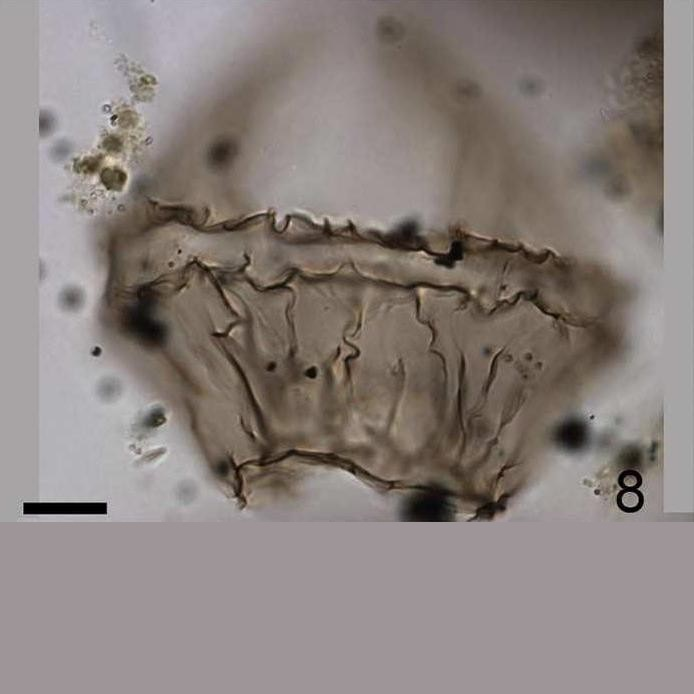 |
SmoothSlightly ornamentedBrown |
Very large epicystSmall short hypocystAntapical protrusion can have thickened wall |
Broad equatorially cingulum |
Leipokatiuminvisitatum | 31 to 56 (L)37 to 80 (Lat) |
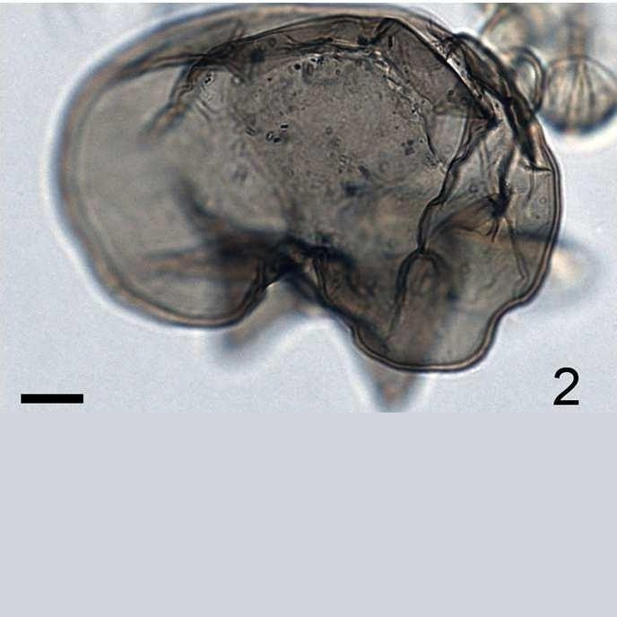 |
GranulateDark brown |
PentagonalVery angular |
Acuminate antapicalhorns with solid tips.Granulate and strongstraight folds |
Lejeunecystaacuminata | 53 to 116 (L) x 61 to 109 (W) |
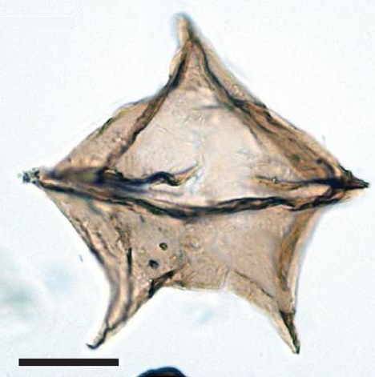 |
PsilateBeige |
RhomboidalAngularHorns small solid tips |
Parallel flanges alongthe lateral sideAntapical horns separated |
Lejeunecystaadeliensis | 120 to 114 (D) |
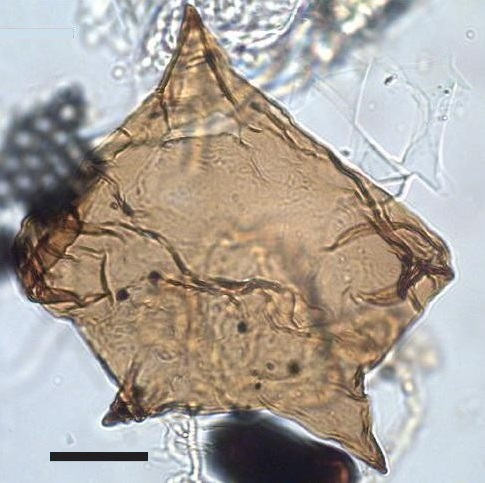 |
Smooth with scattered foldsTransparent |
DeflandroidApical horn hollow, very pointedLateral horn absentAntapical horns closely spaced together |
Elongate attenuated shapenarrow blunt antapexCingulum expressed bymembranous fold |
Lejeunecystaattenuata | 103 to 127 (D) |
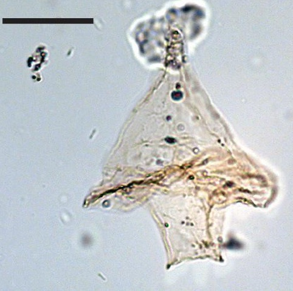 |
SmoothLight brown |
PentagonalConic epicyst shorter than trapezoidal hypocystShort antapical horns |
Low epicyst/hypocystShort of antapical horns |
Lejeunecystabeinenensis | 76 to 86 (D) |
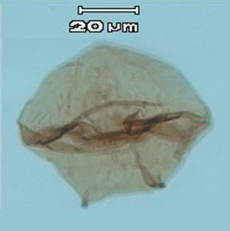 |
SmoothLight to dark brown |
Ovoidal to pentagonalSome thickening atthe apex and antapexProminent rounded apex and low to high, rounded shoulders |
Consistently developedshouldersBroad paracingulum |
Lejeunecystacatomus | 64 to 70 (D) |
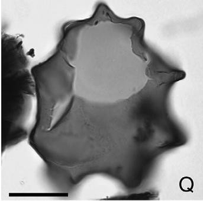 |
LevigateLight brown |
PentagonalSymmetric epicyst and hypocystShort apical hornsand solid distal tipsLarge antapical depression |
Large antapical depressionHas never pericoels |
Lejeunecystacommunis | 60 to 95 (D) |
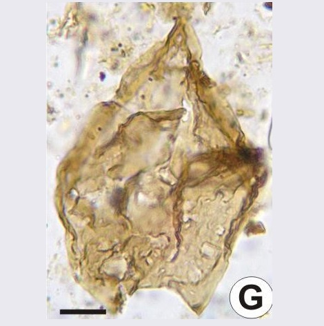 |
SmoothBeige |
DeflandroidLong apical horn, solid tipShort apical horns and solid distal tipsLateral horns absentAntapical horns separated |
Conspicuously epicystWider than longerProminent apical horn |
Lejeunecystacowiei | 60 to 80 (L)70 to 100 (W) |
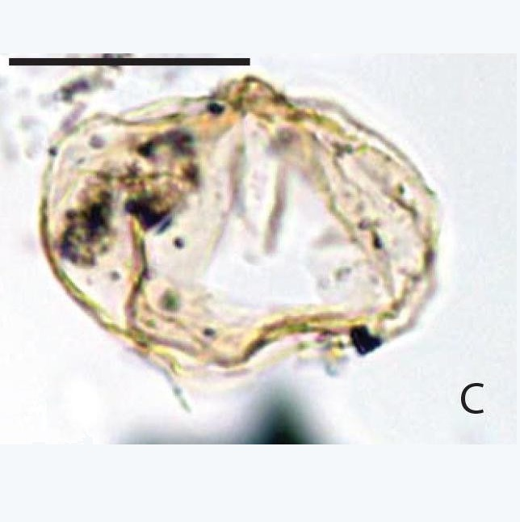 |
Smooth to finely granulatedLight orange, brown |
Dome-shapedwithout apical bossEpicyst broadHypocyst large |
Two very smallantapical horns withthickened distal tips. |
Lejeunecystaepidoma | 74.6 to 84 (L)74.6 to 80 (W) |
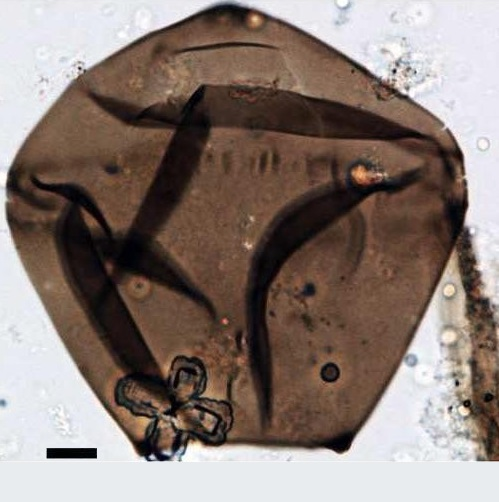 |
Smooth |
Epicyst longer thanhypocyst with no striationsSlightly concavityof epicyst sides |
Blunter apical hornFewer developed spineson antapical horn. |
Lejeunecystafallax | 74.6 to 84 (L)74.6 to 80 (W) |
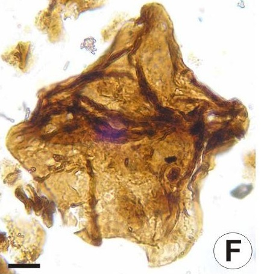 |
Smooth to finely granulated |
Rounded pentagonalEpicyst roundedwith apical bossDepression antapical absent |
Rounded pentagonalTwo antapical protrusions rather than developed antapical horns |
Lejeunecystaglobosa | 51 to 74 (L)43 to 81 (W) |
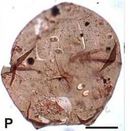 |
Covered with low granules |
PentagonalApex acuminateTwo antapical horns short, conical, pointed to slightly rounded |
Cingulum expressed bytwo transverseechinate ridgesSometimes this area is slightly inflated |
Lejeunecystagranosa | 85 (L)94 (W) |
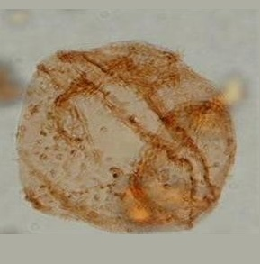 |
Finely granulatedIrregular vertical folds |
SubpentagonalRound symmetricepicyst and hypocystShort apical andantapical hornsLarge antapical depression |
Irregular vertical folds |
Lejeunecystahyalina | 92 (L)87 (W) |
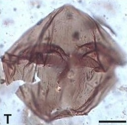 |
Smooth and devoid of sculpturingBeige |
Pentagonal to subroundedApical and lateral horns with small solid tips |
Large sizeBroad aspectProminent apical horn |
Lejeunecystakatatonos | 58 to 96 (L)74 to 118 (W) |
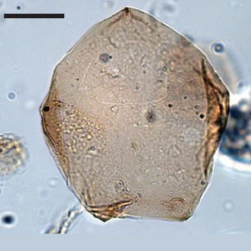 |
Levigate |
PentagonalConical epicyst with rounded to slightly acuminate apex.Hypocyst trapezoidal with two short, pointed antapical horns.Antapical depression low |
Levigate surfaceSize of antapical hornsCingulum expressed by two traverse parallel ridges |
Lejeunecystalata | 109 (L)128 (W) |
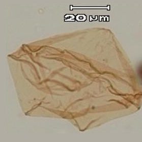 |
Smooth. ThinBrown |
PeridinioidApical and antapicalprotrusions havethickened wall.No striae present. |
Narrow excavated cingulumThickened wallApical and antapical protrusions |
Lejeunecystaoliva | - |
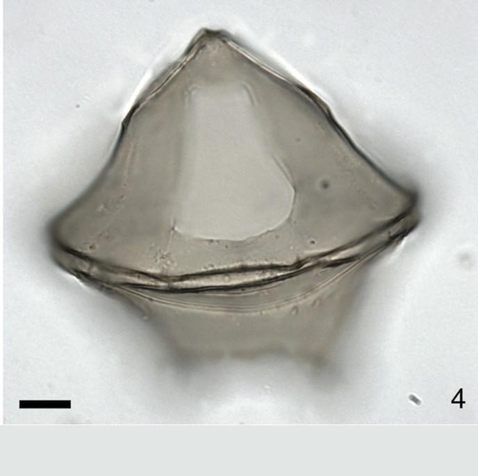 |
FibrousLight brown to transparent |
PeridinioidApical and antapicalprotrusions havethickened wallNo striae present. |
Cingular denticulateridges |
Lejeunecystaparatenella | - |
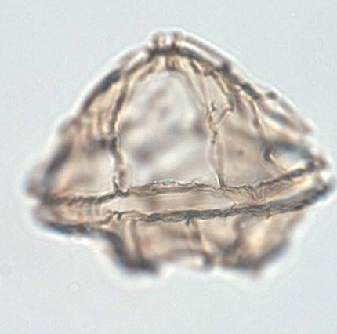 |
SmoothLevigate |
Pentagonal-roundedShort apical horn and distally acuminate, short antapical horn, symmetric with solidand acuminate tipsNo striae present. |
Short antapical hornsSolid acuminate tips |
Lejeunecystapulchra | 63 (L)67 (W) |
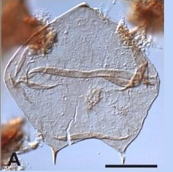 |
ScabrateDark brownDark papilla on tip of each horn |
Subcircularto elliptical |
Scabrate to verrucate or pustulate surface sculpture |
Lejeunecystarotunda | - |
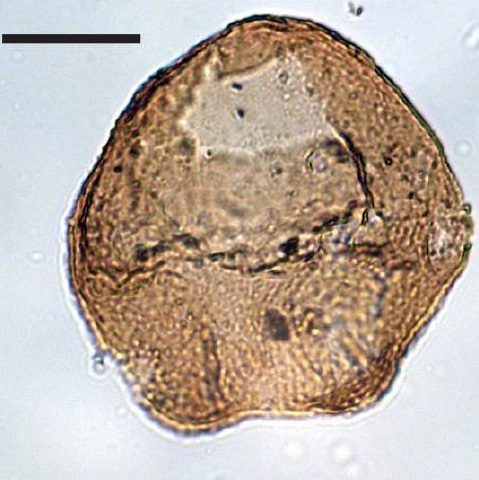 |
Brown |
Antapical andapical protrusionshave thickened wallNo striae present |
Very roundedantapical concavity |
Lejeunecystasabrina | 60 to 95 (L)19 to 27 (W) |
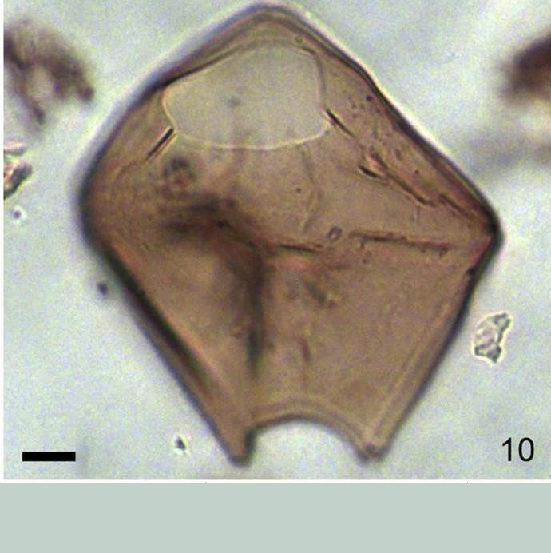 |
BrownSmooth |
Prominent apical hornAntapical rounded horns whichirregularly thickened at their tips |
Intercalary 2aarcheopyle |
Quinquecuspisconcreta | 60 to 80 (L)55 (W) |
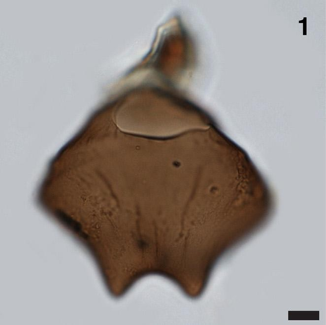 |
Orange brownSmoothStrongly convex |
Epicyst tapers strongly to a blunt apical horn and has concave sides |
Strongly convex sidesBigger size |
Protoperidiniumlatissimum | 65 to 100 (L)56 to 85 (W) |
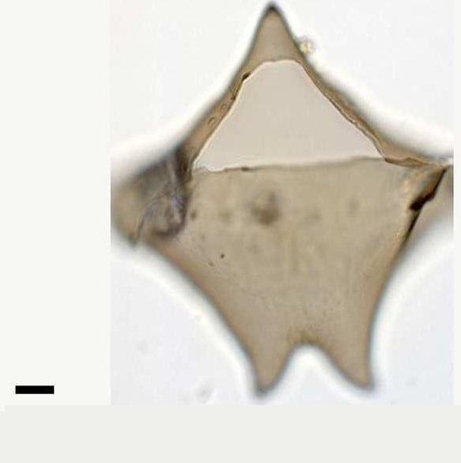 |
GRAPHIC DIFFERENCES (LEJEUNECYSTA)
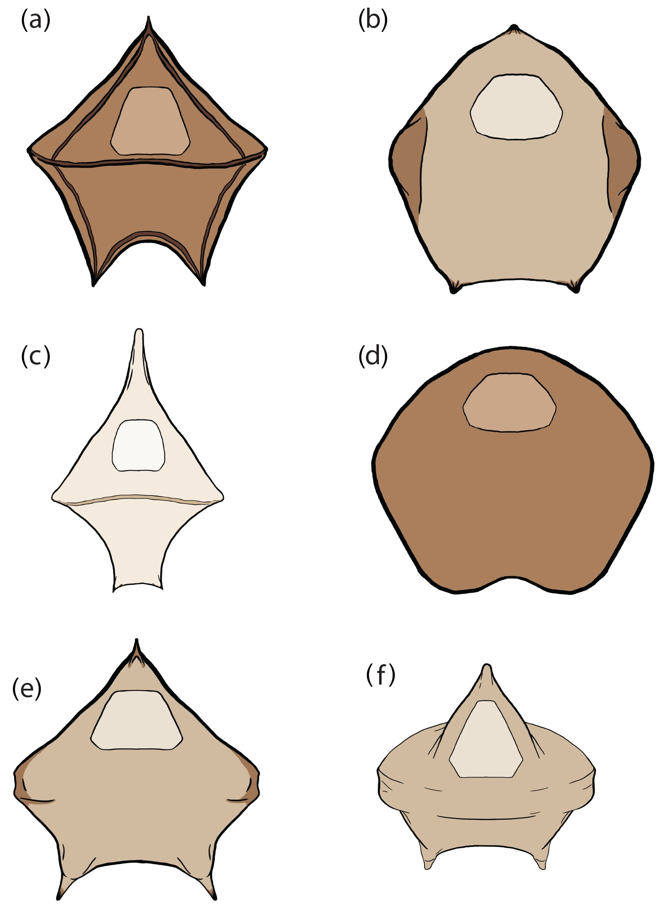
Schematic drawings of the six stratigraphically important species of Lejeunecysta found in the Site U1356 record. (a) Lejeunecysta acuminata; (b) Lejeunecysta katatonos; (c) Lejeunecysta attenuata; (d) Lejeunecysta rotunda; (e) Lejeunecysta adeliensis sp. nov.; (f) Lejeunecysta cowiei. (Bijl et al., 2017, modified).